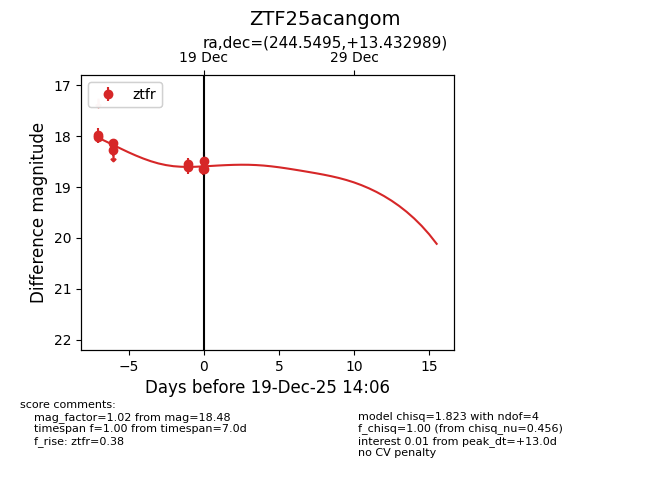
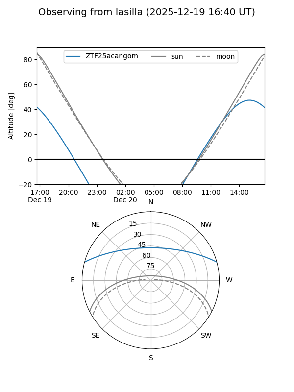
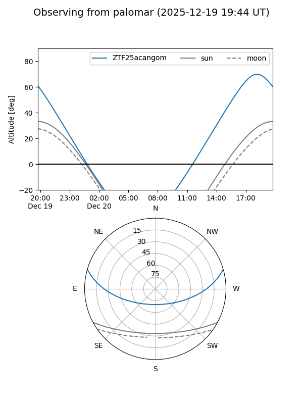
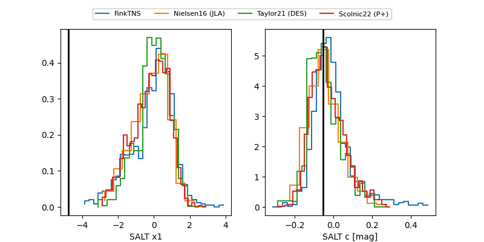

ZTF25acangom
Target ZTF25acangom at 2025-12-19 14:07
Aliases and brokers:
FINK: fink-portal.org/ZTF25acangom
Lasair: lasair-ztf.lsst.ac.uk/objects/ZTF25acangom
ALeRCE: alerce.online/object/ZTF25acangom
alt names
ZTF25acangom (ztf,fink_ztf)
Coordinates:
equatorial (ra, dec) = 244.5495,+13.43299
equatorial (HMS+DMS) = 16:18:11.87,+13:25:58.76
galactic (l, b) = (27.8265,+39.98245)
Flags:
Photometry:
last ztfr=18.48
9 ztfr detections
Lightcurve

Visibility


Additional plots
